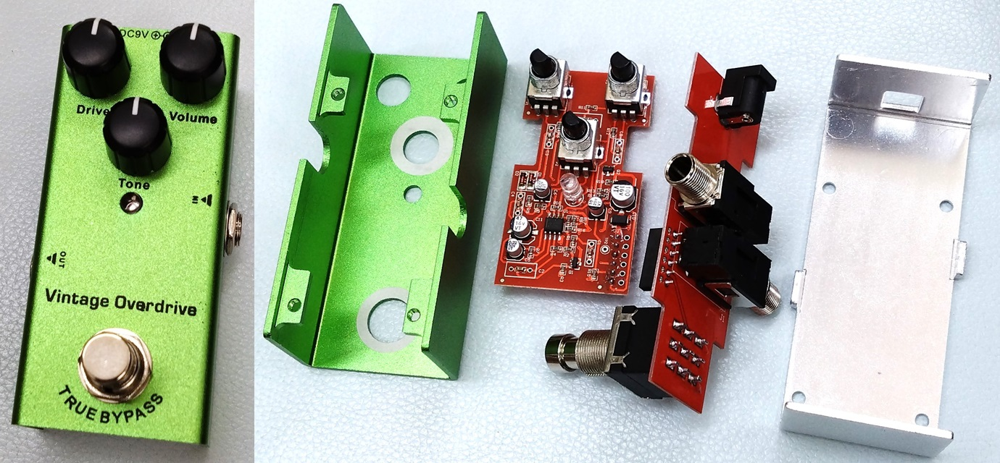
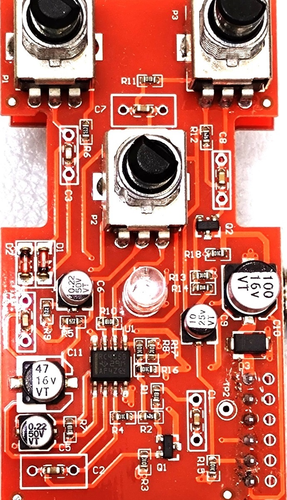
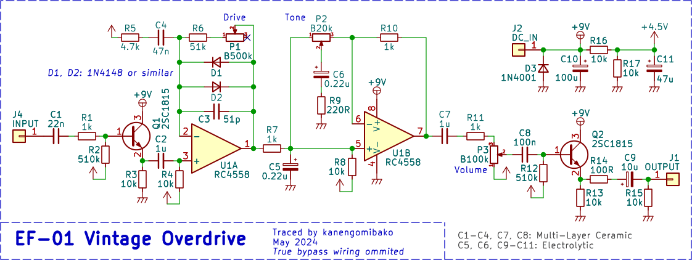
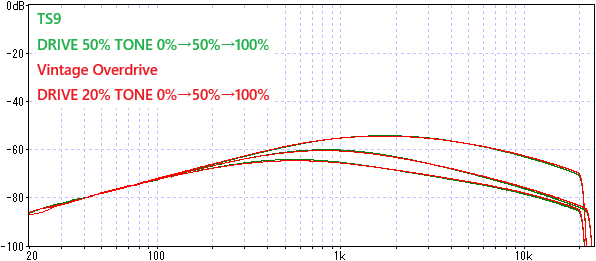

EF-01 Vintage Overdrive 解析
2024年05月18日 カテゴリー：修理・改造・解析

Ibanez TS9やTSMINIについて解析してきましたが、チューブスクリーマーのクローンと思われるVintage Overdriveも購入し中身を確認してみました。AliExpressで送料込み15ドル程度で買うことができます。検索するとERYUEやQudai、IRINといった名前が出てきますが、説明書や箱にブランド名はありませんでした。
ケースはおそらくアルミで、カラーアルマイトのような処理に見えます。白色の部分は導通があり、そこでポットを介しグラウンドに接続されます。
基板は2枚に分かれており、ジャックやフットスイッチが載った基板は他のエフェクトでも共通のようです。積層セラミックコンデンサ（MLCC）が実装されているところは、スルーホール部品の取り付けも可能になっています。

▽回路図

出力部の抵抗が100Ωと10kΩなので、TS808のクローンとして設計されていると思われます。ただしDriveとToneのポットはBカーブなので、操作性は違います。周波数特性に影響が出やすいC5とC6は、MLCCではなく電解コンデンサが採用されています。
TS9に近い周波数特性となることが確認できました。※ゲインを同じくらいに合わせています。

耐久性は不明なものの、安価なチューブスクリーマーとして使えると思います。